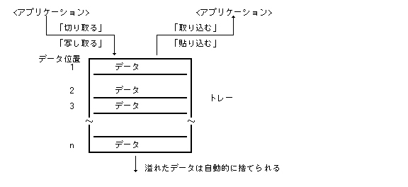
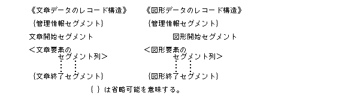
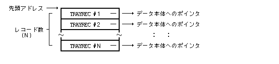
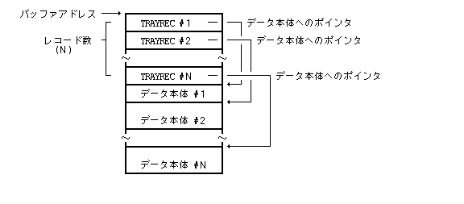
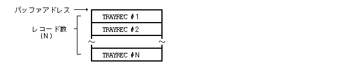

トレーマネージャは外殻の1つとして位置付けられ, 基本的なデータ移動 / 複写の操作である«切り取る», «写し取る», «貼り込む»および«取り込む»で使用されるトレーの管理を行ない, トレー内のデータを操作するфункціонал / підсистемаを提供するものである.
また, ドラッグによるデータ移動 / 複写等のために一時的に使用される «一時トレー»の管理も行ない, その操作функціонал / підсистемаを提供している.
トレーマネージャは単にトレーに格納されるデータ領域の管理を行ない, その内容に関しては一切関知しない.
прикладний додаток / програмаは, 常にユーザからの明示的な操作によってのみトレーの操作を行なわなくてはいけない. すなわち, ユーザの操作とは無関係にприкладний додаток / програма間のデータ交換等にトレーを使用してはいけない.
トレーは, 各ユーザ毎に1つ存在する特殊な«データ格納容器»であり, «切り取る»または«写し取る»の操作のディスティネーションとしてデータが格納され, «貼り込む»または«取り込む»の操作のソースとしてデータが取り出される容器である.
«切り取る／取り込む»の操作ではソースデータは失われ(即ち, 移動), «写し取る／貼り込む»の操作では, ソースデータは保存される(即ち, 複写).
トレーはスタック構造を持ち, 基本的に最後に格納したデータが最初に取り出されるが, その順番を変更したり任意の位置のデータを取り出すことも可能である. データは, 先頭(最後に格納されたデータ)を"1"とした連続番号であるデータ位置により識別される.
トレーに格納されたデータは, «データの削除»操作を行なうか, またはトレーの最大容量をオーバーして溢れた場合に自動的に消滅する. トレーの最大容量は, インプリメントに依存するが, 原則的には最後に格納されたデータから遡って, 少なくとも 5 個のデータは保証されるものとする ( 通常は 10 個程度 ) .
なお, トレーに格納されるデータの大きさは基本的に任意であるが, 小さいрозмір у байтахのデータを効率的に取り扱うことを前提としている.

一時トレーは, ドラッグによる移動／複写等の一時的なデータの交換に使用される特殊な格納容器であり, 1つのデータの格納／取り出しのみを行なう. 従って, 新たなデータを格納すると以前のデータは消滅する.
一時トレーは各ユーザ毎ではなくシステムに1つのみ用意されており, 常にオープンされて使用できる状態となっている. システムの立上げ時には, 一時トレーは空の状態になっている.
прикладний додаток / програмаは, トレーを利用したデータ互換を実現するために, 以下に述べる形式でトレーにデータを格納する必要がある.
なお, トレーマネージャではЗапис (Record)の内容, Запис (Record)タイプの正当性等に関しては一切関知しない.
トレーおよび一時トレーに格納される1つのデータ単位は, TAD データ構成の形式であり, TAD で規定されているセグメントの列となる. TAD データ構成をトレーおよび一時トレーに格納する場合は, 原則的に 1 つの TAD セグメントを 1 つのトレーЗапис (Record)としたトレーЗапис (Record)の列として格納する. ただし, 連続した図形描画セグメント, および連続した文字コードと文章付箋セグメントは, それぞれ1つのトレーЗапис (Record)とすることができる. また, 1 つの TAD セグメントを複数の連続したトレーЗапис (Record)として格納することもできる.
1 つのトレーЗапис (Record)は, 以下のструктура даних Cにより定義される.
typedef struct {
W id; /* Запис (Record)タイプ( > 0 ) */
W len; /* データのバイト長 */
B *dt; /* データ本体へのвказівник (Pointer) */
} TRAYREC;
Запис (Record)タイプは, TAD で定義されているセグメントIDそのものであり, セグメントに対応した 0x80〜0xFD の値となる(内容に関しては, «第3章 TAD詳細仕様書» を参照のこと).
ただし, Запис (Record)タイプとしては, TAD のセグメントIDに加えて以下に示すものが追加される.
TR_VOBJ (=0x1))：
typedef struct {
VLINK vlnk; -- Посилання (Link)Запис (Record)
VOBJSEG vseg; -- Віртуальний об'єкт (Virtual Object)セグメント
} TR_VOBJREC;
TR_TEXT (=0x2))：
TR_FIG (=0x3))：
さらに 1 つの TAD セグメントを連続した複数のトレーЗапис (Record)に分割した場合は, 以下の接続フラグがЗапис (Record)タイプにセットされる.
TR_CONT (=0x4000)):
例： 1つの画像セグメントを複数のトレーЗапис (Record)に分割した場合のЗапис (Record)タイプは, 以下のようになる.
先頭のЗапис (Record) ： TS_IMAGE＋TR_CONT (＝0x40E5)
2番目のЗапис (Record) ： TS_IMAGE＋TR_CONT (＝0x40E5)
： ：
(最後 - 1)番目のЗапис (Record)： TS_IMAGE＋TR_CONT (＝0x40E5)
最後のЗапис (Record) ： TS_IMAGE (＝0xE5)
データ本体は, TAD のセグメントから, 先頭のセグメントID,
およびバイト長を除いたデータ本体部分となる.
ただし, 文章Запис (Record)(TR_TEXT)と図形Запис (Record)
(TR_FIG)の場合は, 先頭のセグメントID,
およびバイト長を含んだ完全なTADセグメントの列となる.
TADデータ構成は, «文章データ»と«図形データ»のいずれかであるため, トレーЗапис (Record)の先頭には, «管理情報セグメント»に続いて«文章開始セグメント»か«図形開始セグメント»のいずれかがくることになり, 最後のЗапис (Record)は«文章終了セグメント»か«図形終了セグメント»となる. 通常は最後の«文章 / 図形終了セグメント»は省略される. また, 最初の«管理情報セグメント»も省略可能である.

トレーおよび一時トレーにデータを格納する場合は,
TRAYREC の配列の先頭адреса пам'ятіと,
トレーЗапис (Record)の数(配列の要素数)を指定する.

トレーおよび一時トレーからデータを取り出す場合は, 以下に示す 3 種類の方法を取ることができる.
TRAYREC の配列が入り,
その直後にЗапис (Record)データ本体が入る形式となる.
TRAYREC の配列のみが入り,
対応するЗапис (Record)データ本体は取り出されない.
この場合, TRAYREC 内のデータ本体へのвказівник (Pointer)
(dt)は意味を持たない.
TRAYREC 配列のインデックス番号で行なう.
この場合, 指定したЗапис (Record)のЗапис (Record)タイプも得られる.


また, トレーに格納したデータには最大 12 文字 ( TCODE )
の任意の名称を格納時に設定することが可能である.
この名称はデータの内容を説明するためにприкладний додаток / програмаプログラムが設定する.
なお, 一時トレーに格納するデータに対しては, 名称をつけることはできない.
トレーは, ユーザ毎に1つ用意される. 通常はユーザの初期Процес (Process)によりオープンされ, そのユーザのПроцес (Process)はそのトレーを常に対象とする. トレーはユーザの使用が終了した時点でクローズされ, その内容は消える.
トレーはスタック構造を持ち, スタックの先頭にデータが格納され, スタックの先頭からデータが取り出されるが, 取り出す場合は任意の位置のデータを取り出すことも可能である.
トレー内のデータには, «選択状態»が定義され, トレー内のどのデータが選択され処理の対象となっているかを示す. トレーは空でない限り, 必ず«選択状態»のデータが1つ存在する.
トレーに対する基本操作として以下のものが用意されている.
一時トレーはスタック構造を持たず, ただ1つのデータのみ格納可能である. 従って一時トレーに対する操作は«格納»と«取り出し»のみとなる.
#define TR_VOBJ 0x1 /* Віртуальний об'єкт (Virtual Object)Запис (Record) */ #define TR_TEXT 0x2 /* 文章Запис (Record) */ #define TR_FIG 0x3 /* 図形Запис (Record) */ #define TR_CONT 0x4000 /* 接続フラグ */
TR_VOBJ (=0x1))：
TR_TEXT (=0x2))：
TR_FIG (=0x3))：
TR_CONT (=0x4000)):
他のЗапис (Record)タイプ(TS_xxx)は, TADセグメントとして定義される.
typedef struct {
W id; /* Запис (Record)タイプ( > 0 ) */
W len; /* データのバイト長 */
B *dt; /* データ本体へのвказівник (Pointer) */
} TRAYREC;
typedef struct {
TC fs_name[20];/* Файл (File)システム名 */
UH f_id; /* Файл (File)ID */
UH attr; /* Віртуальний об'єкт (Virtual Object)タイプ／属性 */
UH rel; /* 続柄インデックス */
UH appl[3]; /* прикладний додаток / програмаID */
} VLINK;
typedef struct {
VLINK vlnk; /* Посилання (Link)Запис (Record) */
VOBJSEG vseg; /* Віртуальний об'єкт (Virtual Object)セグメント */
} TR_VOBJREC;
データ本体は, TAD のセグメントから, 先頭のセグメントID，およびバイト長を除いたデータ本体部分となる. ただし, 文章Запис (Record)(TR_TEXT)と図形Запис (Record)(TR_FIG)の場合は, 先頭のセグメントID， およびバイト長を含んだ完全なTADセグメントの列となる.
TAD データ構成は, «文章データ»と«図形データ»のいずれかであるため, トレーЗапис (Record)の先頭には, «管理情報セグメント»に続いて«文章開始セグメント»か «図形開始セグメント»のいずれかがくることになり, 最後のЗапис (Record)は«文章終了セグメント»か«図形終了セグメント»となる. 通常は最後の«文章／図形終了セグメント»は省略される. また, 最初の«管理情報セグメント»も省略可能である.
《文章データのЗапис (Record)構造》 《図形データのЗапис (Record)構造》
{管理情報セグメント} {管理情報セグメント}
文章開始セグメント 図形開始セグメント
<文章要素の <図形要素の
セグメント列> セグメント列>
: : : :
: : : :
{文章終了セグメント} {図形終了セグメント}
{ }は省略可能を意味する.
トレーおよび一時トレーにデータを格納する場合は,
TRAYREC の配列の先頭адреса пам'ятіと,
トレーЗапис (Record)の数(配列の要素数)を指定する.
トレーおよび一時トレーからデータを取り出す場合は, 以下に示す 3 種類の方法を取ることができる.
TRAYRECの配列が入り,
その直後にЗапис (Record)データ本体が入る形式となる.
TRAYREC の配列のみが入り,
対応するЗапис (Record)データ本体は取り出されない.
この場合, TRAYREC 内のデータ本体へのвказівник (Pointer)( dt )は意味を持たない.
TRAYREC 配列のインデックス番号で行なう.
この場合, 指定したЗапис (Record)のЗапис (Record)タイプも得られる.
また, トレーに格納したデータには最大12文字(TC)の任意の名称を格納時に設定することが可能である. この名称はデータの内容を説明するためにприкладний додаток / програмаプログラムが設定する. なお, 一時トレーに格納するデータに対しては, 名称をつけることはできない.
トレーは, ユーザ毎に1つ用意される. 通常はユーザの初期Процес (Process)によりオープンされ, そのユーザーのПроцес (Process)はそのトレーを常に対象とする. トレーはユーザの使用が終了した時点でクローズされ, その内容は消える.
トレーはスタック構造を持ち, スタックの先頭にデータが格納され, スタックの先頭からデータが取り出されるが, 取り出す場合は任意の位置のデータを取り出すことも可能である.
トレー内のデータには, «選択状態»が定義され, トレー内のどのデータが選択され処理の対象となっているかを示す. トレーは空でない限り, 必ず«選択状態»のデータが1つ存在する.
トレーに対する基本操作として以下のものが用意されている.
一時トレーはスタック構造を持たず, ただ1つのデータのみ格納可能である. 従って一時トレーに対する操作は«格納»と«取り出し»のみとなる.
|
ERR topn_tra(void)
なし
>= 0 Успішне виконання < 0 Помилка (Код помилки)
自Процес (Process)のユーザに対するトレーをオープンし, 以後のトレーに関する操作を可能とする. この時, トレーは空の状態になっている.
既にトレーがオープンされている場合は何もしない.
この関数は, 通常ユーザの初期Процес (Process)によりそのユーザのセッションが開始する際にコールされ, 一般のприкладний додаток / програмаでは使用しない.
EX_NOSPC : システムのОперативна пам'ять (Memory)領域が不足した.
|
ERR tcls_tra(void)
なし
>= 0 Успішне виконання < 0 Помилка (Код помилки)
自Процес (Process)のユーザに対するトレーをクローズしその内容を消す.
この関数は, 通常ユーザの初期Процес (Process)によりそのユーザのセッションが終了する際にコールされ, 一般のприкладний додаток / програмаでは使用しない.
EX_TRAY : トレーはオープンされていない.
|
W tpsh_dat(TRAYREC *data, W nrec, TC *name)
TRAYREC *data トレーに格納するデータ W nrec Запис (Record)数 TC *name データに付ける名前
>= 0 Успішне виконання(関数値は格納したЗапис (Record)数) < 0 Помилка (Код помилки)
トレーの先頭に data で指定した nrec 個のデータЗапис (Record)を格納し,
そのデータを«選択状態»とする. 関数値として格納したЗапис (Record)数が戻る.
name はデータに対して付ける任意の名称であり,
先頭の12文字(TC)までが有効となる. 名称を付けない場合は, name = NULL とする.
データの格納により, トレーに溢れが生じた場合は, 最後のデータは自動的に消滅する.
EX_ADR : адреса пам'яті(data,name)のアクセスは許されていない. EX_NOSPC : システムのОперативна пам'ять (Memory)領域が不足した(データのрозмір у байтахが大きすぎる). EX_PAR : параметриが不正である(nrec≦0, トレーЗапис (Record)の内容が不正). EX_TRAY : トレーはオープンされていない.
|
W tpop_dat(TRAYREC *data, W size, W *a_size, W rec, TC *name)
TRAYREC *data トレーから取り出すデータ格納場所
W size data のバイト数
W a_size 全体のバイト数
W rec 取り出し方法
< 0 : 全体取り出し
= 0 : ヘッダ取り出し
> 0 : 指定Запис (Record)データ取り出し(rec で指定したЗапис (Record))
TC *name データ名称の格納場所
>= 0 Успішне виконання(関数値はデータのЗапис (Record)数 / Запис (Record)タイプ) < 0 Помилка (Код помилки)
トレー内の選択されているデータを,
rec の指定に従って取り出し, data で指定した size バイトの領域に格納する.
格納すべきデータのрозмір у байтахより size が小さい場合は, size 分だけ格納され,
EX_PAR のПомилкаとなる. data = NULL の場合は,
size の値は無視され, データは一切格納されない.
いずれの場合も *a_size には格納すべきデータの全体のバイトрозмір у байтахが戻される.
このため例えば, rec < 0, data = NULL とすることにより,
格納されているデータ全体のрозмір у байтахを知ることができる.
なお, データを取り出した後もトレー内のデータは削除されずに残っており,
選択状態のままとなる. name はデータに付けられた名称を格納する領域へのвказівник (Pointer)であり, 12 + 1文字(TC)の領域である必要がある ( 格納された名称の最後には TNULL が付けられる ) . name = NULL の場合は, 名称は格納されない.
関数値として, 全体取り出し / ヘッダ取り出し ( rec ≦ 0 ) の
時は, データの総Запис (Record)数が戻り, 指定Запис (Record)取り出し
( rec ＞ 0 ) の時は, 取り出したЗапис (Record)のЗапис (Record)タイプが戻る. 存在しないЗапис (Record)番号を指定した場合は, EX_PAR のПомилкаとなり, *a_size には "0" が戻される.
トレーが空の場合は, 取り出し方法に無関係に,
*a_size には "0" が戻され,
関数値は "0" となる.
EX_ADR : адреса пам'яті(data,a_size,name)のアクセスは許されていない.
EX_PAR : параметриが不正である
(size≦0, 領域のрозмір у байтахが不足, recの値が不正).
EX_TRAY : トレーはオープンされていない.
|
W tdel_dat(void)
なし
≧0 Успішне виконання(関数値は«選択状態»のデータ位置) < 0 Помилка (Код помилки)
トレー内の«選択状態»のデータを削除する. 削除後は削除した直後のデータが«選択状態»となる. 直後のデータが存在しない場合(即ち最後のデータの場合)は, 直前のデータ(即ち新規に最後となったデータ)が«選択状態»になる.
関数値としては, 削除後に«選択状態»となったデータ位置 ( > 0 ) が戻るが, トレーが空の場合は何も行なわれず, 関数値は "0" が戻る.
EX_TRAY : トレーはオープンされていない.
|
W tsel_dat(W pos)
W pos データ位置
>= 0 Успішне виконання(関数値は«選択状態»のデータ位置) < 0 Помилка (Код помилки)
トレー内の, pos で指定した位置のデータを«選択状態»とする.
今まで«選択状態»であったデータは«非選択状態»となり,
関数値として新たな«選択状態»のデータ位置 ( > 0 ) が戻る.
pos は, 先頭のデータを "1" とした連続番号であり,
pos が存在するデータ数より大きい場合は,
最後のデータが«選択状態»となる. また pos ≦ 0 の場合は,
«選択状態»を変えずに現在の«選択状態»のデータ位置を関数値として戻す.
トレーが空の場合は何も行なわれず, 関数値は "0" が戻る.
EX_TRAY : トレーはオープンされていない.
|
W tmov_dat(W pos)
W pos データ位置
>= 0 Успішне виконання(関数値は«選択状態»のデータ位置) < 0 Помилка (Код помилки)
トレー内の«選択状態»のデータを pos
で指定したデータ位置に移動する.
移動したデータは«選択状態»のままとなる.
pos ≦ 1 の場合は先頭に移動し,
pos が現在のデータ数より大きい場合は,
最後に移動する.
関数値として移動後のデータのデータ位置 ( > 0 ) が戻り, トレーが空の場合は何も行なわれず, 関数値は "0" が戻る.
EX_TRAY : トレーはオープンされていない.
|
W tget_sts(UW *size, UW *rsize)
UW *size トレーの総バイト数 UW *rsize 使用できる残りのバイト数
>= 0 Успішне виконання(関数値は存在するデータ数) < 0 Помилка (Код помилки)
トレー内にあるデータの総数を関数値として戻し,
その総バイト数を, size に設定する.
また使用できる残りのバイト数を rsize に設定する
(特に制限がない場合でも適当な大きな数が戻されるものとする).
size, rsize がそれぞれ NULL
の場合は設定されない.
EX_ADR : адреса пам'яті(size,rsize)のアクセスは許されていない. EX_TRAY : トレーはオープンされていない.
|
W tset_dat(TRAYREC *data, W nrec)
TRAYREC *data データ W nrec Запис (Record)数
>= 0 Успішне виконання(関数値は格納したЗапис (Record)数) < 0 Помилка (Код помилки)
一時トレーに data で指定した
nrec 個のЗапис (Record)を格納する.
以前に格納されていたデータは捨てられる.
nrec = 0 の場合は,
一時トレーを空の状態とする.
この場合, data はアクセスされないため,
その値は何でもよい.
EX_ADR : адреса пам'яті(data)のアクセスは許されていない.
EX_NOSPC : システムのОперативна пам'ять (Memory)領域が不足した(розмір у байтахが大きすぎる).
EX_PAR : параметриが不正である
(nrec < 0, トレーЗапис (Record)の内容が不正).
|
W tget_dat(TRAYREC *data, W size, W *a_size, W rec)
TRAYREC *data データ格納場所
W size data のバイト数
W *a_size データの全体のバイト数
W rec 取り出し方法
< 0 : 全体取り出し
= 0 : ヘッダ取り出し
> 0 : 指定Запис (Record)データ取り出し(rec で指定したЗапис (Record))
>= 0 Успішне виконання(関数値はデータのЗапис (Record)数／Запис (Record)タイプ) < 0 Помилка (Код помилки)
一時トレー内に格納されているデータを,
rec の指定に従って取り出し,
data で指定した
size バイトの領域に格納する.
格納すべきデータのрозмір у байтахより size が小さい場合は,
size 分だけ格納され, EX_PAR
のПомилкаとなる. data = NULL の場合は,
size の値は無視され,
データは一切格納されない.
いずれの場合も *a_size
には格納すべきデータの全体のバイトрозмір у байтахが戻される.
このため例えば, rec < 0, data = NULL
とすることにより, 格納されているデータ全体のрозмір у байтахを知ることができる.
なお, データを取り出した後も一時トレー内のデータは削除されずに残っている.
関数値として, 全体取り出し／ヘッダ取り出し
( rec ≦ 0 )の時は,
データの総Запис (Record)数が戻り, 指定Запис (Record)取り出し( rec > 0 )
の時は, 取り出したЗапис (Record)のЗапис (Record)タイプが戻る.
存在しないЗапис (Record)番号を指定した場合は,
EX_PAR のПомилкаとなり, *a_size には
"0" が戻される.
一時トレーが空の場合は, 取り出し方法に無関係に,
*a_size には "0" が戻され,
関数値は "0" となる.
EX_ADR : адреса пам'яті(data,a_size)のアクセスは許されていない.
EX_PAR : параметриが不正である
(size≦0, 領域のрозмір у байтахが不足, recの値が不正).